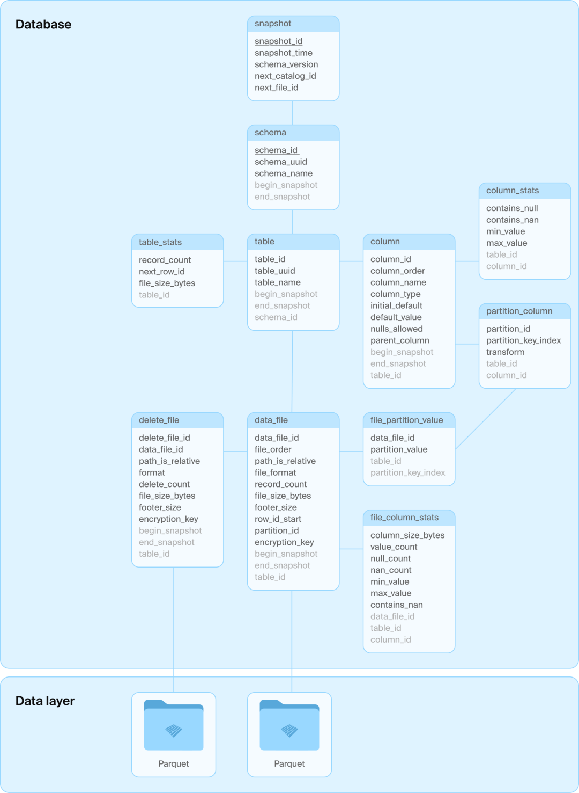
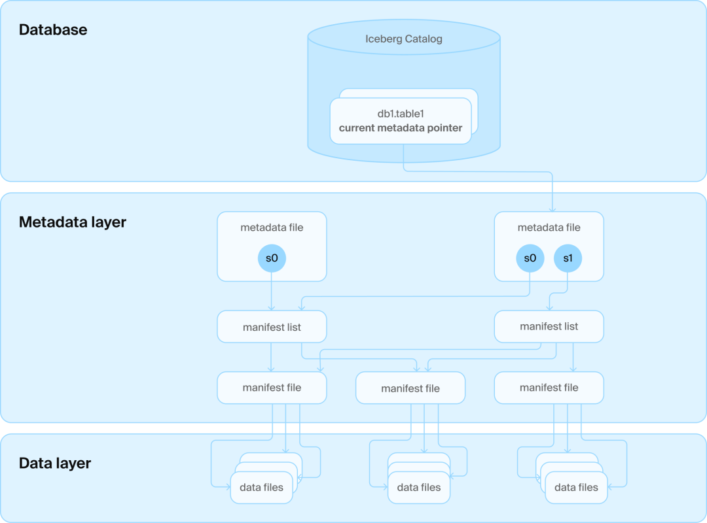

DuckDB最近新推出了DuckLake，核心思想是使用数据库来管理文件的元数据。DuckLake的架构非常直观：就是一些Parquet文件 + 一个SQL数据库（用来存放表的元数据）。

图1：DuckLake 架构
选择Parquet的理由
- 开放格式，不依赖语言、引擎
- 列式存储、高压缩率、性能好
- 数据文件自描述
选择数据库管理元数据的理由
- 借助数据库的优势来保障ACID
使用关系型数据库管理数据湖中的数据，是DuckLake本次最核心的观点。接下来，重点看下DuckLake这样做的理由。
问题引入
要从数据湖表格式Iceberg说起。Iceberg架构分为三层：
- data layer：存放数据文件
- metadata layer：对数据文件的索引
- catalog：管理多张表

图2：Iceberg 架构
Iceberg每次对表的修改，commit后就会新增一个snapshot，对应着一个新的manifest list以及它所对应的一系列manifest files（两层索引），还会生成一个metadata.json（包含完整的历史），如果表的数据更新比较频繁，那么manifest list、manifest file、metadata.json也会逐渐增多，如何维护当前最新的版本，也变得困难；并且，两层manifest索引和json文件只是对应着单表，现实业务中用户还希望能同时管理多张表。
Iceberg catalog层的出现就是为了解决这些问题。Iceberg在metadata之上，增加一层catalog service，连接数据库，用来管理所有table folder names，同时，记录着当前最新的版本号，通过这个版本号定位到最新版本对应的metadata.json，找到对应的manifest list和manifest file，最终找到数据文件；同时catalog维护Iceberg中多张表的信息，本质上，是借助数据库的事务来满足ACID。
Iceberg的设计初衷是避免使用数据库，所以煞费苦心地将读取和更新表所需的全部信息编码进了对象存储上的文件中，力求摆脱数据库的束缚。然而，最终还是不得不妥协，引入数据库作为catalog的一部分以确保一致性。hmm，back to database...
而DuckLake的目的，是将所有元数据结构（包括目录信息和表级数据）都移入一个SQL数据库中进行管理，用数据库代替Iceberg的两层manifest索引文件、json文件和catalog service。归根结底，是让元数据管理的任务交给发展了50多年的关系型数据库。具体使用哪种SQL数据库由用户自行决定，唯一的要求是系统必须支持ACID操作和主键，并具备标准的SQL支持。
DuckLake设计原则
Simplicity
只包含了元数据（数据库）、数据（S3/NAS/local disk/…，用于存Parquet）
Scalability
- 数据：数据在对象存储中，拥有无限扩展的能力
- 元数据：可以对接mysql、postgresql、sqlite等数据库，依赖数据库提供的扩展能力（元数据的数据量比实际数据小太多了，根据DuckDB作者的说法，相差大约5个数量级）
- 计算：DuckDB是单进程引擎，它的执行模型在多线程下可以获得良好的scale-up能力，scale-out需要依赖像Ray这类的分布式架构
Speed
在读数据上，Iceberg需要：
- 访问metadata service获取版本号
- 读json
- 读manifest list
- 读manifest file
- 读Parquet
在写数据上，修改iceberg table（一次commit），需要：
- 写parquet file
- 写两层manifest
- 写json
- 更新database
而DuckLake，只需读/写Parquet + 读/写database；除此之外，对于小修改、小文件的处理，DuckLake采用data inlining的方式，例如行数很少的修改，可以先写database，因为database有全部的信息，所以数据是一致的，并且实时可见。
总结
更多关于DuckLake设计原则的阐述可以查看DuckDB官网文档。后续将会继续深入探讨DuckLake，看看它的具体实现。